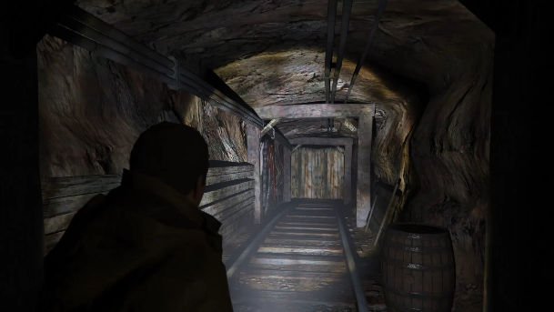

Chad Stahelski là sự lựa chọn hoàn hảo để mang đến những phân cảnh hành động đỉnh cao cho phim Ghost of Tsushima.
Trang Deadline mới đây đưa tin tựa game nổi tiếng Ghost of Tsushima của Sucker Punch sẽ được chuyển thể thành phim điện ảnh, vị trí đạo diễn của bộ phim được giao cho Chad Stahelski – người tạo nên thành công cho series phim hành động đình đám John Wick. Sony sau đó cũng đã lên tiếng xác nhận thông tin của Deadline.
>>>>Xem chi tiết tại: zteamstore.ihostfull.com
Nate Fox, giám đốc trò chơi của Sucker Punch chia sẻ:
“Chúng tôi rất vui vì có thể hợp tác với Sony Pictures để biến điều này thành sự thực. Chad Stahelski đã tạo ra điều đặc biệt với John Wick. Tầm nhìn và kinh nghiệm dày dặn của ông là những nhân tố quyết định để tạo nên những phân cảnh hành động hay nhất. Nếu như ai đó có thể tái hiện sống động sự căng thẳng trong những trận quyết chiến katana của Jin thì chính là Chad Stahelski.”
>>>>Xem chi tiết tại: zteamstore.ihostfull.com
Ra mắt năm 2020 trên PS4, Ghost of Tsushima xoay quanh trận chiến chống quân Mông Cổ xâm lược của Jin Sakai. Vì muốn bảo vệ quê hương, đồng bào, Jin đã chấp nhận đánh đổi tín ngưỡng của mình bấy lâu để trở thành Ghost. Được biết tựa game đã được lấy cảm hứng từ những bộ phim samurai kinh điển như Akira Kurosawa, vì thế có vẻ như nó cũng có tiềm năng rất lớn với màn ảnh rộng.

>>>>Xem chi tiết tại: zteamstore.ihostfull.com
Ghost of Tsushima là game IP gốc bán chạy nhất trên PS4 với,4 triệu bản được bán ra chỉ trong 3 ngày ra mắt đầu tiên, tựa game cũng vừa đạt được doanh số khổng lồ lên tới 6,5 triệu bản trên toàn cầu. Ghost of Tsushima cũng là bộ phim thứ 2 đánh dấu sự hợp tác của Sony Pictures và PlayStation Productions sau Uncharted.
>>>>Xem chi tiết tại: zteamstore.ihostfull.com